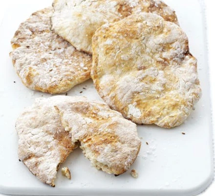

Gluten-free flatbread

Description:
Makes 8 pieces of flatbread that only takes 20 minutes of prep and cooking.
Ingredients:
- 400g gluten-free self-raising flour, plus extra for dusting
- 1 tbsp cumin seeds, toasted
- 300ml natural yogurt
Steps:
- Heat the grill to medium and dust a baking sheet with a little flour
- Mix the flour and cumin seeds in a bowl, then season
- Stir in the yogurt and 100ml water, then mix to form a soft dough
- Divide the dough into 8 equal pieces, then shape into circles or ovals
- Grill on the baking sheet for 3-5 mins of each side until golden and puffed